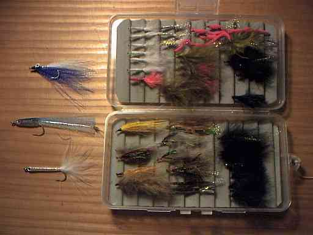

私のお気に入り
自作の道具たち フライボックスの自作
釣具店などで市販されている材料で、好みのサイズ・形式のフライボックスを自作することができます。

自作のフライボックス
写真は99年の12月、オークランドでカウワイをフライで狙ったときの中身です。
材 料：
- 市販のルアー・フライ用小物入れ（中仕切板のない、プレーンなタイプ）
- リップル（波形）あるいは平面のフォームマット
フォームマットは、フライフックの保持に適度な弾力と耐久性が必要。 - リップルタイプは釣具メーカー FLUX製、リップルフォームシート M、もしくは、パズデザイン社の波形ウレタンフォーム ZAC-919 を使用しています。平面タイプであれば、アマゾンで、「ウレタンフォーム 硬質」というキーワードで検索するといろいろな製品を探すことができます。WAKI スポンジゴム粘着付、の5mm タイプが良さそうに思います。5mmX300mmX300mm の大きさで、値段は 500円以下で買えます。
作り方：
- 小物入れの内部寸法を測り、これに合わせてフォームをカットする。
- フォームを、発砲スチロール用接着剤、または両面テープで固定。
- フライボックスの落下防止用として、タコ糸（もしくは百円ショップで売っているスパイラルコードの細くて短いタイプ）と安全ピンを付け、フライベストのポケットと連結する。
以上で完成、とても簡単に出来ます。
このようにして作ったフライボックスの利点としては、
- 安価である。おそらく１個、500～600円で作れます。
- 小物入れのフタ部分と底部分と両面でフライを収納できる。
- 軽量である。アルミ製や木製よりは軽くできます。
- 好みのフォームを選べる。
リップルタイプ ＝ ドライフライ
平面タイプ ＝ ニンフ、ストリーマー
両面にコンビネーションも可能。
などです。
お暇なシーズンオフにはぜひ、試作してみて下さい。
1999/09
2020/03/10 加筆修正
2020/03/10 加筆修正
追記：他の目的で購入したスポンジが、フォームの代用品になりそうだったので書きとめておきます。itek というブランドの NRスポンジ、品番 KSNR-205 という製品です。
画像はヨドバシカメラ・オンラインショップより引用
厚さ5mm×200×200mm の寸法で、適度な柔軟性があります。幅7～10mm ほどの短冊状にカットして、強力な防水両面テープか、透明ゴム系接着剤でプラスチック製小物入れの底に固定すれば、リップルタイプのフォームの代用としてドライフライも収納できます。
価格は、ヨドバシカメラの通販で、１枚 104円ととてもお買い得でした。
2021/02/27 加筆
私のお気に入り 目次へ
サイトマップ
ホームへ
お問い合わせ